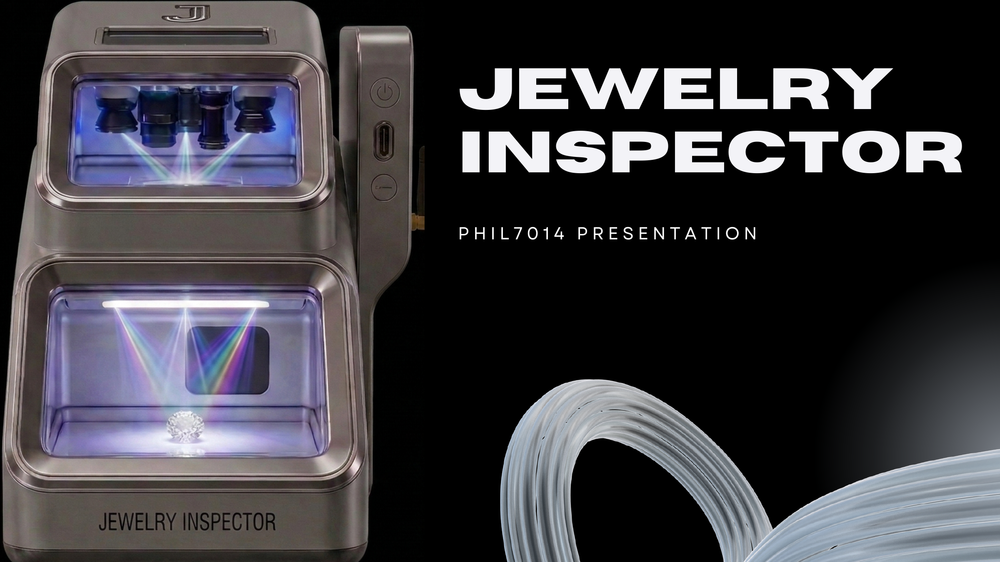

洞察与定义
通过访谈、问卷、竞品观察和数据分析识别用户痛点，把模糊需求整理成明确的问题与机会。
- 用户研究
- 市场调研
- 竞品分析
Product · UX · Market · AI
我把用户需求、市场信号和技术机会，整理成清楚、可验证、能继续推进的产品方案。



01 · About
产品、体验、市场与 AI 的跨学科实践者。
我喜欢先理解真实的人和场景，再把复杂问题转化为清晰、可验证的下一步。
我的学习与实践跨越传播学、信息技术、产品设计、市场研究和 AI 社会影响研究。这让我习惯从不同视角看同一个问题：用户为什么会犹豫，业务真正需要什么，以及技术可以做到哪一步。
我做过官网架构与界面重构、用户路径优化、竞品与消费者数据分析和海外社交媒体运营，也完成过用户研究、高保真原型、商业化策略与 AI 伦理研究。我希望继续把研究和判断转化为更好的真实体验。
保持好奇，找到证据，把复杂问题讲清楚，然后做出可以测试的下一步。
What I Do Well
不是孤立的工具列表，而是一条从发现问题到交付方案的完整路径。
通过访谈、问卷、竞品观察和数据分析识别用户痛点，把模糊需求整理成明确的问题与机会。
梳理核心任务与信息架构，用线框、高保真原型和可用性反馈推动体验逐步成形。
把研究结论翻译成产品定位、营销策略、GTM 路径和清晰的视觉呈现，让方案更容易达成共识。
使用 Excel、SQL 和基础 Python 支撑判断，并关注 AIGC、大语言模型与负责任 AI 的产品机会。
02 · Experience
从客户反馈到产品页面，从市场数据到传播策略，我一直在练习连接人、信息与行动。
Education · Master
人工智能、伦理与社会方向文学硕士。系统理解 AI 技术、应用场景与社会影响，关注技术价值、责任与用户信任之间的平衡。
UI/UX · Market Research
规划并重构官网架构，优化 CTA 与用户路径；整合竞品销量、款式和社交平台数据，为产品选型、定价和广告表达提供依据。
Operations · Web Design
参与官网改版并独立设计网页模板；结合 TikTok 后台数据分析用户画像、内容节奏与潜在受众，支持品牌海外曝光。
Product · Client Insight
对接海外客户，收集需求、使用反馈与改进建议，整理后同步产品团队，并参与客户拓展与售后运营。
Education · Bachelor
传播、文化与信息技术专业文学学士。在传播、设计、技术与商业的交叉课程中建立跨领域思考能力。
My Advantages
普通话母语、英语流利，并有海外学习与客户沟通经验，能在不同背景的成员之间准确传递信息。
不止停在洞察报告，也能继续完成信息架构、原型、页面实现、策略材料与汇报呈现。
用数据发现规律，也重视行为背后的动机，让判断既有证据，又不失去对真实用户的理解。
持续关注 AIGC 和大语言模型，同时把伦理、隐私与信任视为 AI 产品体验的一部分。
03 · Interaction Playground
以下交互原型来自过往项目的核心任务。我把原有静态设计重新制作成网页体验，展示流程、反馈和状态变化。
今天需要多长时间？
选择今天的遛狗员
预约信息已准备好
没有匹配的商品，换个关键词试试。
04 · Selected Work
精选产品、体验、市场与 AI 研究案例。每个项目都保留完整原始文档。
浏览全部六个项目Let's Connect
正在寻找产品、UX、市场增长与 AI 产品相关机会。
dejianzhangkent@outlook.com